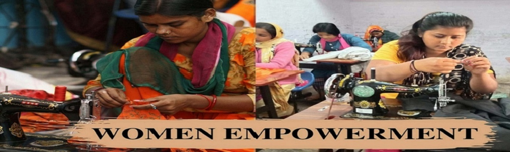

<!--<div class="homepage-div">
    <div class="row">
        <div class="col-12">
            <div class="homeImage">
                
            </div>
            

        </div>


    </div>

</div>-->
    <div class="image-box">
    
    
            <!---->
        

            <div class = "container">
                <div class = "row">
                    <div class = "col-12">
        <div class="top-left">
            <h1 style="font-size:50px ; color: black">Let's Empower!</h1>
            <h2 style="font-size:30px;  color: whitesmoke; letter-spacing: 1px ;text-shadow: -1px 1px 0 #000,
            1px 1px 0 #000,
           1px -1px 0 #000,
          -1px -1px 0 #000;">"For a man, sky is the limit. A woman heads towards an infinite reach!"</h2>
        </div>

        </div>
        </div>
        
    


    
        <div class = "row">

            <div class = "col-4">
                <div class="box">
                   <label>Aim</label>
                    <p>Developing this application aims at providing the scheme initiated by the Government of India as an integrated package of the following services to women and enable them to become economically more viable, independent and raise their socio-economic status. 
                     This application consists of the scheme related to Social Welfare and Financial services for women.
                        </p> 
                </div>
            </div>


            <div class = "col-4">
                <div class="box">
                   <label>STEP</label>
                    <p>
                        The Support to Training and Employment Programme for Women (STEP) Scheme aims to provide
            skills that give employability to women and to provide competencies
            and skill that enable women to become self-employed/ entrepreneurs.
            The Support to Training and Employment Programme for Women (STEP) scheme has two main objectives viz. a) To
            provide skills that give employability to women. b) To provide skills that enable women to become
            self-employed/entrepreneurs.
            

                        </p> 
                </div>
            </div>
        
            <div class = "col-4">
                <div class="box">
                   <label>Welfare Schemes</label>
                    <p>
                        Under these welfare scheme we provide accomodation to our women who are working hard and are away from their families.
                         Apart from providing accomodation, we bring for our users, the Sukanya Yojana scheme under which we secure the future of our budding daughters.
                          It is a security scheme that will look after our daughters in future at the time of peril.
                        </p> 
                </div>
            </div>
    
          
        </div>


    </div>

</div>


